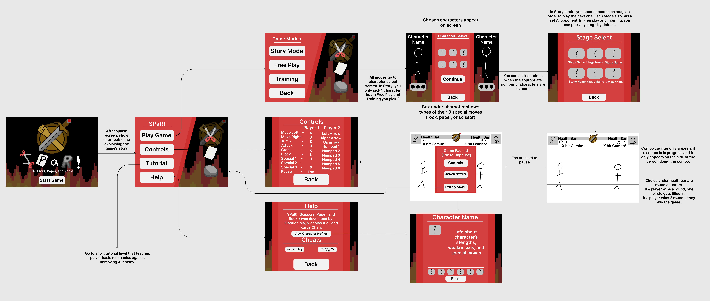

SPaR! (Scissors Paper and Rock)
Game Design Document
by Xiaotian Ma, Kurtis Chan, and Nicholas Aloi
INTRODUCTION
This document describes a game called "SPaR!", which is designed to be a 2D fighting game.
The game will employ sprite-based animation, tiled backgrounds, collision detection, physics,
AI, efficient memory management, render threading, and more basic 2D game techniques.
TECHNOLOGY
SPaR will be developed for the Windows Platform using the McKilla's Gorilla game engine, which is a bare-bones engine developed by
Richard McKenna for rapid prototyping 2D games. DirectX will be used as the underlying rendering technology. XACT will be used for
all music and sound effects management.
BACK STORY
Every year, the prestigious SPaR is held, a rock paper scissors tournament that only the masters of the art attend. This year,
there are six contestants fighting for the glory of being crowned the rock paper scissors world champion. Each one has unique
abilities and tools that will help them take on the competition. Who will come out on top and be crowned the victor?
OBJECTIVE
Pick one of the six characters and fight your way through the tournament! You will face off against all of the other contestants
in one on one battles.
GAMEPLAY
Players will be able to choose a fighter and fight a gauntlet of opposing fighters to become the best. Players will then use moves
based on an assigned type that counter each other. Whoever can get the other to 0 HP or has the highest life at the end of the timer
wins.
- Explain combo scaling
- Explain archetype of each character / character moves in general
- Explain what happens when certain types of moves hit each other (including moves of the same type)
CONTROLS
This game will be played using a keyboard. Menus will be navigated using a mouse. Once started, use the following:
Player 1
- A - Move Left
- D - Move Right
- S - Jump straight up
- S + A - Jump left
- S + D - Jump right
- J - Basic Attack (Scissors)
- K - Grab (Paper)
- L - Block / Parry (Rock)
- U - Special Attack 1
- I - Special Attack 2
- P - Special Attack 3
Player 2 (For multiplayer play)
- LEFT-ARROW - Move Left
- RIGHT-ARROW - Move Right
- UP-ARROW - Jump straight up
- UP-ARROW + LEFT-ARROW - Jump left
- UP-ARROW + RIGHT-ARROW - Jump right
- NUM-1 - Basic Attack (Scissors)
- NUM-2 - Grab (Paper)
- NUM-3 - Block / Parry (Rock)
- NUM-4 - Special Attack 1
- NUM-5 - Special Attack 2
- NUM-6 - Special Attack 3
ESC - This pauses the game and presents a pop-up window to the player asking them to continue when they are ready.
If a game is not in progress, ESC does nothing.
GRAPHICAL USER INTERFACE

Splash Screen - The splash screen GUI presents a game logo and a background of 2 characters in a level. There will be a button for
starting the game. Once the “start game” is pressed, a text of our story background will appear. A “ESC to skip” text will appear
on the upper right corner of the screen. Once pressed, we skip the text and jump into the Main Menu.

Main Game Menu
- Play Game - lets players select their game mode
- Controls - Leads the player to a screen where they can see the control scheme for both player 1 and 2
- Tutorial - the player is put into a short tutorial playing as the “basic character” against an unmoving AI that teaches them the
controls and a basic combo.
- Help - Displays text saying who developed the game.You can also activate cheats here. On this page, there is a “view character
profiles” button that takes you to a new screen.
- Character profiles - a screen that displays a character’s name, avatar, moveset, and general strengths and weaknesses. Used to
learn about the basics of each character.


Game Modes
- Story Mode - Select a character. Then players need to beat other characters in a certain sequence.
- Free Mode - This is where you can play multiplayer with another person locally. You can also fight AI and change their characters
in this mode too. Players can choose characters and stages freely and then fight.
- Training Mode - Select your character, stage, and enemy character. The enemy will not move or die, allowing you to practice or
experiment with your character’s moveset. There will be a button to reset the enemy and player to the center of the stage, a button
to show hitboxes, and a button to go back to the main menu.
Story Mode Selection
- Levels - Player can choose which level to play on
- 1 Selection Box - Single player mode. The player can choose a character. Then the player needs to beat other characters in turns on
each map.
- Character Avatars - Avatar for each character is shown. Clicking on each avatar enables the player to choose the corresponding character.
Free & Training Mode Selection
- Levels - Player can choose which level to play on
- 2 Selection Box(for 1P and 2P) - When left clicking 1P or 2P, the player can choose a character from character avatars. Right clicking
1P or 2P will switch 1P or 2P between human player or AI.
- Character Avatars - Avatar for each character is shown. Clicking on each avatar enables the player to choose the corresponding character.


In-Game Menu - While the game is in progress, we'll always have a game menu that allows the player to select from the following options. The game menu pops up only when “ESC” is pressed.
- Levels - Player can choose which level to play on
- Pause The Game - Once the in-game menu is popped up(pressed ESC). Game will be paused, and the input will be deactivated.
- Display Controls - If pressed, the game will display an info screen that includes a description of all game controls.
- About - If pressed, the game will display an credit screen
- Exit - If pressed, the game program will exit.

In-Game GUI - Once a game starts, a 3-2-1-Begin sequence is counted down and displayed for the player to see. Once begun, two players
can move and attack each other. There will be a timer to limit one game.
- Timer (first 3s countdown, and then count down from 90s) for each round
- 2 Hit combo texts on both sides.
- HP for each player
- Avatar For each character (next to their hp)
- Round Counter

ARTWORK
All artwork in the game will be original. The following needs to be created:
Fighters - There will be 6 unique fighters in the game, each with 6 different attacks. Each will require animations for:
- Walking Forward
- Walking Backwards
- Jumping
- Animations for each of the 6 attacks
- Taking Damage
- Dying
- Winning / Dance / Celebration
Levels/Stages - We will need to decorate the background of the game to match each fighter.
UIs - Each gui mentioned before needs corresponding UI artwork.
SOUND EFFECTS
All sound effects will be original. Sounds must be made to coincide with each of the following events:
- Walking
- Punch
- Block
- Grab
- Jump
- Round Start (3, 2, 1, Fight!)
Music
- There will be different music for:
- Each of the 6 stages (probably different music on each stage)
- Menu Music
- Victory theme